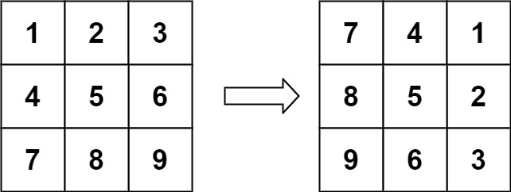

48. 旋转图像
题目与约束
给定一个 n× n 的二维矩阵 matrix 表示一个图像。请你将图像顺时针旋转 90 度。
你必须在原地 旋转图像，这意味着你需要直接修改输入的二维矩阵。请不要使用另一个矩阵来旋转图像。
示例 1：

输入：matrix = [[1,2,3],[4,5,6],[7,8,9]]
输出：[[7,4,1],[8,5,2],[9,6,3]]
示例 2：

输入：matrix = [[5,1,9,11],[2,4,8,10],[13,3,6,7],[15,14,12,16]]
输出：[[15,13,2,5],[14,3,4,1],[12,6,8,9],[16,7,10,11]]
提示：
n == matrix.length == matrix[i].length1 <= n <= 20-1000 <= matrix[i][j] <= 1000
Java 完整推导
Java 核心不变量
转置完成行列交换，水平翻转完成顺时针旋转。
完整推导
思路推导
-
直觉与痛点（强行旋转）：
顺时针旋转 90 度，本质上是把顶部一行变成了右侧一列，右侧一列变成底部一行... 这叫做“四角轮换”。你可以用一层层的
for循环去推导下标关系，但稍微一不留神就会越界，或者把已经转过来的数字又覆盖掉了。 -
破局思路（数学折纸法：转置 + 镜像翻转）：
顺时针旋转 90 度，其实等价于两个简单的轴对称翻转操作的组合：
- 第一步：沿主对角线（左上到右下）“转置”矩阵。（就是把矩阵沿着对角线折叠一下，右上角的数字和左下角的数字互换）。
- 第二步：将每一行“水平镜像翻转”。（就是把每一行的左右元素互换）。
-
逻辑推演（以一个 3x3 矩阵为例）：
- 原矩阵：
Plaintext
1 2 3
4 5 6
7 8 9
- **沿主对角线转置（`mat[i][j]` 与 `mat[j][i]` 互换）**：
1 4 7
2 5 8
3 6 9
- **每一行水平翻转（左右互换）**：
7 4 1
8 5 2
9 6 3
大功告成！不仅代码逻辑简单得令人发指，而且完美实现了原地旋转！
Java 实现
class Solution {
public void rotate(int[][] matrix) {
int n = matrix.length;
// 1. 第一步：沿主对角线翻转矩阵（转置）
// 注意内层循环 j 从 i 开始！如果 j 从 0 开始，会导致刚换过去的数字又被换回来！
for (int i = 0; i < n; i++) {
for (int j = i; j < n; j++) {
int temp = matrix[i][j];
matrix[i][j] = matrix[j][i];
matrix[j][i] = temp;
}
}
// 2. 第二步：水平翻转每一行
for (int i = 0; i < n; i++) {
// 双指针翻转数组的标准写法，只需要遍历到列的一半即可
for (int j = 0; j < n / 2; j++) {
int temp = matrix[i][j];
matrix[i][j] = matrix[i][n - 1 - j];
matrix[i][n - 1 - j] = temp;
}
}
}
}
复杂度
- 时间复杂度：O(N2)。我们需要遍历矩阵的两遍。第一遍只遍历对角线以上的元素（约 N2/2），第二遍遍历矩阵的左半部分（约 N2/2），总操作次数为 O(N2)。
- 空间复杂度：O(1)。我们仅仅使用了一个常数变量
temp在原矩阵上进行元素交换，完美符合 O(1) 的原地限制。
- 致命踩坑点：为什么转置时
j要从i开始？（for (int j = i; j < n; j++)） - 如果在转置操作里写成j = 0，当外层走到i=1, j=0时，你交换了[1][0]和[0][1]；但之前在i=0, j=1时你已经交换过它们了！结果就是换了两次等于没换。j从i开始，保证了我们只遍历主对角线“右上方”的三角形区域，把它和“左下方”对调。 - 面试官发难：“如果我现在要你【逆时针旋转 90 度】呢？” - 底气十足的秒答：逆时针旋转也是两次翻转的组合。 - 方案 A：先沿主对角线“转置”，然后再把每一列“上下翻转”。 - 方案 B：先沿副对角线（右上到左下）“转置”，然后再把每一行“水平翻转”。 - 算法之美，在于通过简单对称操作的组合，替代复杂的路径追踪。
Python 完整推导
转置交换行列，左右翻转改变方向
把原矩阵沿主对角线转置：matrix[row][col] 与 matrix[col][row] 互换。再把每一行左右翻转。
组合后的映射是 (r, c) → (c, n-1-r)，正好是顺时针旋转 90 度的位置。
用 3×3 矩阵追踪
起点：
[1,2,3]
[4,5,6]
[7,8,9]
只交换主对角线右上侧：2 与 4、3 与 7、6 与 8。转置后得到：
[1,4,7]
[2,5,8]
[3,6,9]
逐行左右翻转：
[7,4,1]
[8,5,2]
[9,6,3]
追踪四个角
- 原左上角 1 转置后仍在左上，水平翻转后到右上。
- 原右上角 3 转置后到左下，水平翻转后到右下。
- 原左下角 7 转置后到右上，水平翻转后到左上。
- 原右下角 9 转置后到右下，水平翻转后到左下。
Python 实现
参考来源：经典解法实现
保留旧 Python 的转置加逐行翻转实现，只整理变量与签名；算法未改变。
from typing import List
class Solution:
def rotate(self, matrix: List[List[int]]) -> None:
n = len(matrix)
for row in range(n):
for col in range(row + 1, n):
matrix[row][col], matrix[col][row] = matrix[col][row], matrix[row][col]
for row in matrix:
row.reverse()
只交换一次每条对角线
内层 col 从 row+1 开始，只处理主对角线上侧。若从 0 开始，(0,1) 与 (1,0) 会在两轮中交换两次，最终恢复原状。
二阶矩阵
2×2 的非对角位置只有一对：matrix[0][1] 与 matrix[1][0] 交换一次。之后两行各自左右翻转，得到 [[3,1],[4,2]]。
原地性
转置和对角线交换只改写矩阵已有位置。row.reverse() 也直接翻转列表本身，不会创建新的二维矩阵。
复杂度
- 时间复杂度：
O(n²)。 - 空间复杂度：
O(1)。
每个方阵位置参与常数次交换，时间 O(n²)；只交换矩阵内元素，额外空间 O(1)。
力扣原题
C++ 实现
实现来源：经典解法实现
- 顺时针旋转 90° = 先沿主对角线转置，再每行左右翻转
- 转置：交换 g[i][j] 与 g[j][i]（只走上三角避免二次交换）
- 翻转：每行首尾双指针交换
class Solution {
public:
void rotate(vector<vector<int>>& matrix) {
int n = matrix.size();
for (int i = 0; i < n; i++) // ① 转置
for (int j = i + 1; j < n; j++)
swap(matrix[i][j], matrix[j][i]);
for (auto& row : matrix) // ② 每行左右翻转
reverse(row.begin(), row.end());
}
};
Go 实现
实现来源：经典解法实现
- 顺时针旋转 90° = 先沿主对角线转置，再每行左右翻转
- 转置：交换 g[i][j] 与 g[j][i]（只走上三角避免二次交换）
- 翻转：每行首尾双指针交换
func rotate(matrix [][]int) {
n := len(matrix)
for i := 0; i < n; i++ { // ① 转置
for j := i + 1; j < n; j++ {
matrix[i][j], matrix[j][i] = matrix[j][i], matrix[i][j]
}
}
for _, row := range matrix { // ② 每行左右翻转
for l, r := 0, n-1; l < r; l, r = l+1, r-1 {
row[l], row[r] = row[r], row[l]
}
}
}
C 实现
实现来源：经典解法实现
- 顺时针旋转 90° = 先沿主对角线转置，再每行左右翻转
- 转置：交换 g[i][j] 与 g[j][i]（只走上三角避免二次交换）
- 翻转：每行首尾双指针交换
void rotate(int** matrix, int matrixSize, int* matrixColSize) {
for (int i = 0; i < matrixSize; i++) { /* ① 转置 */
for (int j = i + 1; j < matrixSize; j++) {
int t = matrix[i][j];
matrix[i][j] = matrix[j][i];
matrix[j][i] = t;
}
}
for (int r = 0; r < matrixSize; r++) { /* ② 每行左右翻转 */
for (int l = 0, rt = matrixSize - 1; l < rt; l++, rt--) {
int t = matrix[r][l];
matrix[r][l] = matrix[r][rt];
matrix[r][rt] = t;
}
}
}